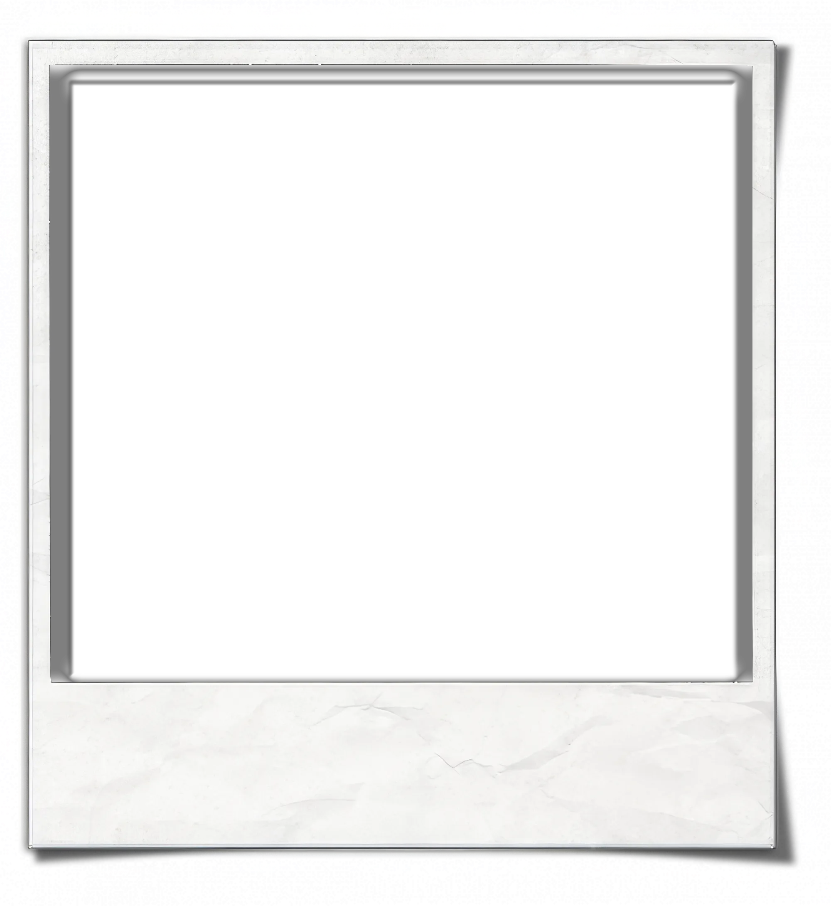
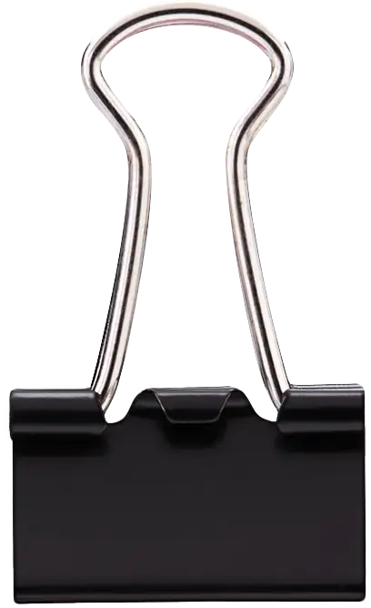

Joshua Sanz
Sex:
DOB:
01 / 07 / 93
DDV:
?? / ?? / ??
Origin:
Exomorph
Clade:
Coactive
Form(s):
Transmissible


the WITCHWARPED
FIELD SYNOPSIS: Unhoused confidence artist exposed to undocumented thaumaturgic protocol in Yucatán facility. Current state includes transmissible, identity-altering Form and Variation set allowing facial theft and covert contamination of bystanders. Subject maintains strong social aptitude and flexible criminal skillset; primary companion is anomalous avian predator “RAÚL” (manticore-type pigeon) acting as mobile weapon and psychological anchor. Threat assessment: UMBER for infiltration and escalation in civilian populations; any capture protocol must assume multiple false identities in active rotation.
Attributes & Skills:
Intelligence
Intelligence: 3Intelligence represents book smarts and data processing: memory, general knowledge, and solving complex problems.Joshua connects ideas quickly, retains details, and solves layered problems with clear reasoning.
Wits
Wits: 2Wits governs quickness of thought, improvisation, and perception: noticing details and reacting to new information.Joshua notices common cues and reacts in time to keep pace with most situations.
Resolve
Resolve: 2Resolve is patience, concentration, and determination: staying focused despite distraction or discouragement.Joshua stays on task for a while, regaining focus with brief resets.
Strength
Strength: 1Strength is muscular power and applied force across a wide range of physical tasks and violence.Joshua manages light exertion but tires quickly under heavy load.
Dexterity
Dexterity: 3Dexterity represents hand-eye coordination, agility, and speed: balance, precision, and controlled movement.Joshua moves cleanly and fast, with reliable precision and balance.
Stamina
Stamina: 2Stamina describes general fitness, endurance, and toughness: sustained effort and resistance to physical punishment.Joshua maintains a decent pace and recovers with short rests.
Presence
Presence: 1Presence is raw charisma, assertiveness, and command: shaping attention and moods by simply being there.Joshua can speak up, but his impact fades without support.
Manipulation
Manipulation: 4Manipulation governs shaping others through word choice and presentation: masking intent, framing ideas, and guiding agreement.Joshua weaves layered messages, nudging decisions while appearing neutral.
Composure
Composure: 3Composure describes emotional control, poise, and steadiness: keeping a level head and resisting manipulation.Joshua holds steady in conflict, reading pressure without reacting to it.
Academics
Academics: 1Academics represents general higher education and knowledge of the arts and humanities, including topics like history, language, literature, law, and economics. Often represents the amount of schooling Joshua has.Joshua has a basic knowledge of history, roughly equivalent to a high school graduate or college student. He knows how to conduct effective research and probably did well in school.
Computer
Computer: 1Computer describes skill beyond basic internet use: programming, diagnosing and repairing major software/hardware issues, focused data searches, filesystem digging, encryption cracking, hacking, and network sabotage.Joshua has used computers more extensively than most. He has a basic grasp of programming, runs complicated searches, and can find and interpret files hidden or encrypted by an average user.
Crafts
Investigation
Investigation: 1Investigation governs actively finding and assembling clues: lateral thinking, intuitive leaps, pattern-spotting, and drawing conclusions to form a concrete picture of events.Joshua is a strong armchair detective who excels at puzzles, riddles, and brainteasers.
Medicine
Occult
Occult: 1Occult represents knowledge of myths, folktales, and urban legends about the strange; separating rumor from plausible truth and building on others' encounters and theories.Joshua has scratched the surface of strange stories, knows many phenomena, spots obvious fakes, and notes a few plausible tales.
Politics
Science
Athletics
Brawl
Drive
Drive: 1Drive governs the operation of motorized vehicles under stress: chases, evasions, high-speed maneuvers; Piloting Specialty covers aircraft.Joshua keeps his head in dangerous weather or treacherous conditions, and is hard to run off the road; with Piloting he handles small private aircraft.
Firearms
Firearms: 2Firearms represents familiarity with shooting, maintaining, and identifying personal firearms and similar weapons like bows and crossbows, including practical laws and sourcing.Joshua is a decent, regular shot, perhaps a hunter or officer who practices often but has rarely fired in the line of duty.
Larceny
Larceny: 2Larceny governs the illicit skills of breaking and entering, lock picking, pickpocketing, safecracking, and sleight of hand; defeating physical security and palming items.Joshua bypasses electronic security and alarms and can run confidence games; he breaks into most houses or offices easily.
Stealth
Stealth: 2Stealth is remaining hidden, unseen, and unheard: sneaking, blending, disguises, and exploiting distractions to avoid detection.Joshua follows targets without tipping them off and slips past sentries.
In Plain Sight
Survival
Weaponry
Animal Ken
Empathy
Empathy: 2Empathy governs reading and understanding others' feelings and motives through cues or instinct to detect deception, moods, and uncertainty.Joshua could be a therapist or social worker, always sensing secrets or worries and pinpointing what's wrong.
Expression
Intimidation
Persuasion
Persuasion: 3Persuasion is changing minds and influencing behavior through logic, charm, fast talk, or emotional appeals to reshape what people want.Joshua regularly wins awards or decisive debates, getting people to question strongly held beliefs.
Fast-Talking
Socialize
Socialize: 2Socialize governs small talk, etiquette, and fitting in across settings from dive bars to state dinners; managing groups with sensitivity and poise.Joshua blends gracefully into almost any social situation.
Streetwise
Streetwise: 1Streetwise represents knowing how the streets work: safe routes, who to ask, black markets, secrets, and avoiding the law in the city's underbelly.Joshua knows his neighborhood deeply and who to approach for what he needs.
Subterfuge
Subterfuge: 3Subterfuge is the art of deception: lying convincingly, spotting lies, hiding emotions and motives, and conveying hidden meanings.Joshua maintains complex webs of lies and even the suspicious can't tell when he's lying.
Misdirection
Health:
Willpower:
Acclimation:
Stability:
Speed:
9
Defense:
2
Initiative:
+6
Size:
5
Merits:
Flashback
Hypervigilance
Manticore Companion − Raúl
Fast-Talking
Deviation